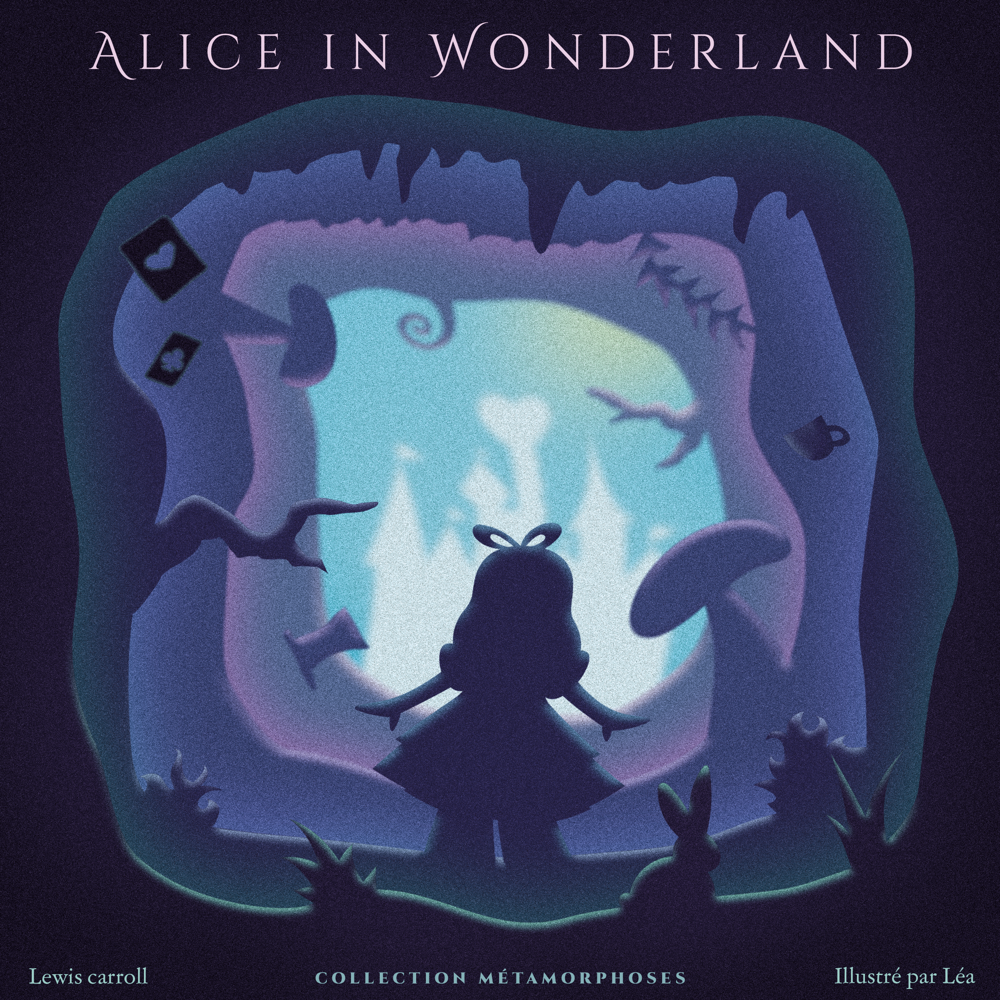
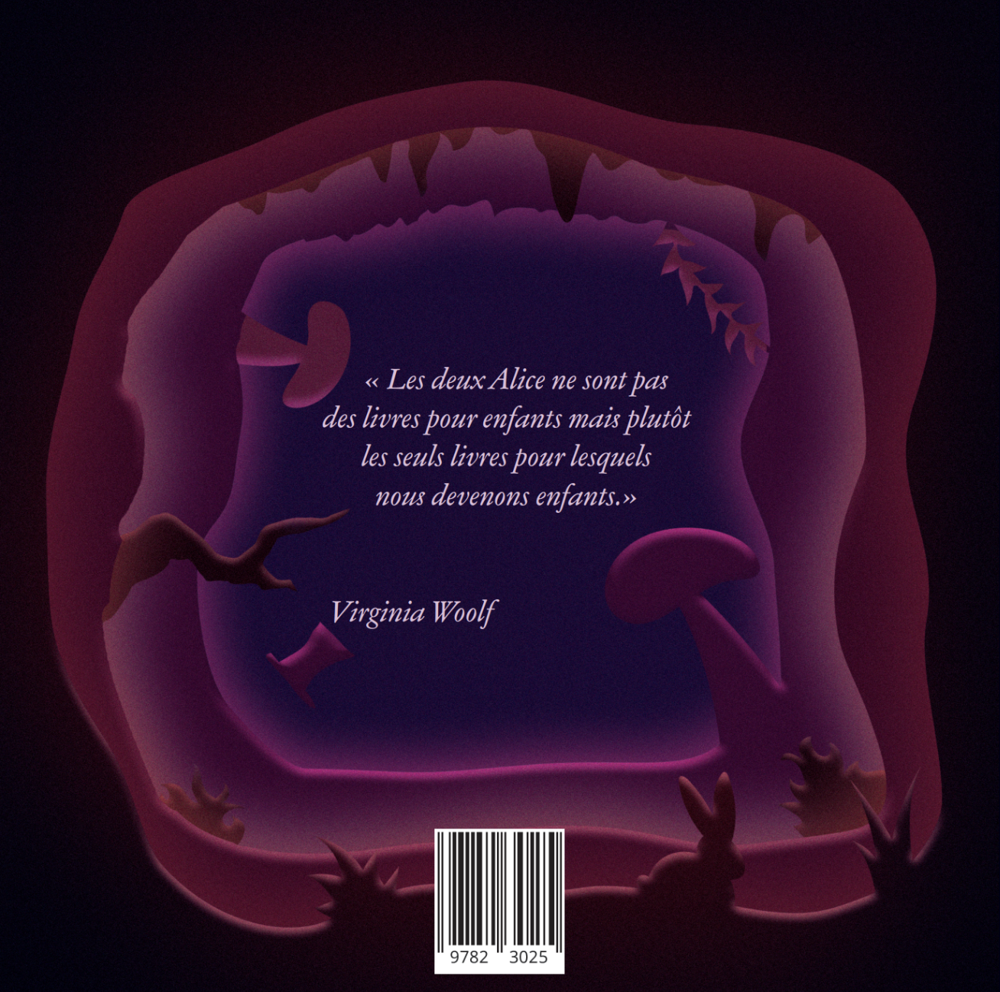

Alice - Couverture
Illustration - Illustrator - Photoshop - Indesign




Projet de cours. Je devais réaliser la 1ere et 4ème de couverture pour le roman iconique de Lewis Carroll, Alice au pays des merveilles, publié en 1865. J'ai décider de faire une adaptation pour les plus jeunes avec une illustration simple et enfantine. J'ai d'abord réalisé les différents plans sur illustrator pour créer un effet de profondeur, puis j'ai ajouté des effets de lumière et de distortion sur photoshop pour accentuer le réalisme et l'immersion dans l'univers d'Alice. J'ai aussi travaillé la mise en page de textes du roman sur Indesign.